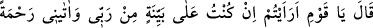
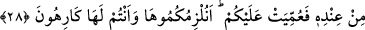
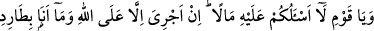
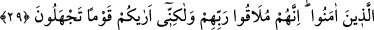

olduğunuzu düşünüyoruz.”
28. (Nuh) dedi ki: “Ey kavmim! Eğer ben Rabb’im tarafından (bildirilen) açık bir
delil üzerinde isem ve O bana kendi katından bir rahmet vermiş de o size gizli
bırakılmış ise, buna ne dersiniz? Siz onu istemediğiniz halde biz sizi ona zorlayacak
mıyız?”
Nûh “dedi ki: “Ey kavmim! Eğer ben Rabb’im tarafından” bildirilen “açık bir
delil” apaçık bir burhan ve iddiânın doğru olduğuna şehâdet edecek bir şâhit “üzerinde
isem ve O bana kendi katından bir rahmet” -ki bu rahmet peygamberliktir- “vermiş de
o” kanıt “size gizli bırakılmış ise, buna ne dersiniz?” yâni bana haber verin.
“Siz onu istemediğiniz” tercih etmediğiniz, muhtevâsı hakkında düşünmediğiniz
“halde biz sizi ona zorlayacak mıyız?” Yani sizi, bu açık delili kabul etmeye mi
zorlayacağız. O delil ile yola gelmeye mecbur mu edeceğiz?
Bu ifade, inkâr/red mânâsında bir sorudur. Nûh (a.s.) şöyle demiş oluyor: “Biz
kendiliğimizden sizi zorlayamayız.” Kâfirlere verilen cevabın özeti şudur: “Deyin
bakalım, şayet ben, iddiânın doğru olduğuna gayet açık bir şekilde delâlet eden bir delil
üzerinde isem, fakat bu delil size gizli kalıyor, tarafınızdan kabul görmüyorsa, iyice
düşünmeden ondan yüz çevirdiğiniz halde onu size zorla kabul ettirmemiz mümkün olur
mu? Yani tabîî ki olmaz.”
Müftî Sa‘dî der ki: “Burada yapılamayacağı belirtilen zorlama, öldürme ve
benzerleri ile icbâr etme şeklindeki zorlamadır. Kabul etmelerini sağlamaya yönelik
sözlü zorlama ise zâten yapılmaktadır.”
Katâde şöyle der: “Eğer peygamberler kavimlerini îmâna zorlayabilselerdi,
zorlarlardı, fakat bunu yapamamışlardır.”
Bizim makbûlümüz olan kimseyi makbûl sayarsın
Bizim terk ettiğimiz kimseyi dergâhından sürersin
Kötü ve iyi senin emrinin bendeleridir
İlâhî hikmetine teslim ile başlarını eğmişlerdir